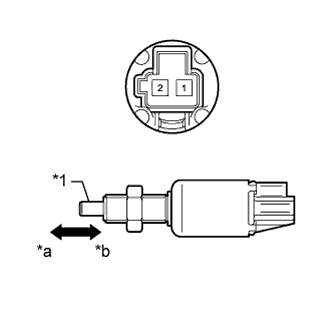
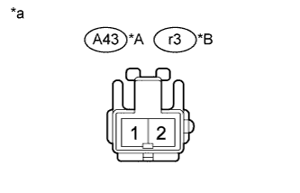

СИСТЕМА КРУИЗ-КОНТРОЛЯ > Цепь переключателя муфты |
| 1.ПРОВЕРЬТЕ ПЕРЕКЛЮЧАТЕЛЬ МУФТЫ СЦЕПЛЕНИЯ В СБОРЕ |
|  |
Для моделей с левосторонним рулевым управлением:
Снимите переключатель муфты (Нажмите здесь).
Для моделей с правосторонним рулевым управлением:
Снимите переключатель муфты (Нажмите здесь).
Измерьте сопротивление в соответствии со значениями, приведенными в таблице ниже.
| Контакты для подключения диагностического прибора | Положение переключателя | Заданные условия |
| 1 - 2 | Нажат | Менее 1 Ом |
| Не нажат | 10 кОм или более |
| Результат | Следующий шаг |
| OK | А |
| NG (для моделей с левосторонним рулевым управлением) | B |
| NG (для моделей с правосторонним рулевым управлением) | C |
| *1 | Колпачок |
| *a | Не нажат |
| *b | Нажат |
|
| ||||
|
| ||||
| А | |
| 2.ПРОВЕРЬТЕ ЖГУТ ПРОВОДОВ И РАЗЪЕМ (ПЕРЕКЛЮЧАТЕЛЬ МУФТЫ СЦЕПЛЕНИЯ - АККУМУЛЯТОРНАЯ БАТАРЕЯ) |
|  |
Отсоедините разъем A43*1 или r3*2 переключателя.
Измерьте напряжение в соответствии со значениями, приведенными в таблице.
| Контакты для подключения диагностического прибора | Положение переключателя | Заданные условия |
| A43-1 - масса | Зажигание включено | 11-14 В |
| Зажигание выключено | Менее 1 В |
| Контакты для подключения диагностического прибора | Положение переключателя | Заданные условия |
| r3-1 - масса | Зажигание включено | 11-14 В |
| Зажигание выключено | Менее 1 В |
| *A | Для моделей с левосторонним рулевым управлением |
| *B | Для моделей с правосторонним рулевым управлением |
| *a | Вид спереди разъема со стороны жгута проводов: (к переключателю муфты сцепления в сборе) |
|
| ||||
| OK | |
| 3.ПРОВЕРЬТЕ ЖГУТ ПРОВОДОВ И РАЗЪЕМ (ECM – ПЕРЕКЛЮЧАТЕЛЬ МУФТЫ) |
Отсоедините разъем A43*1 или r3*2 переключателя.
Отсоедините разъем C34*3 или C91*4 ECM.
Измерьте сопротивление в соответствии со значениями, приведенными в таблице ниже.
| Контакты для подключения диагностического прибора | Условие | Заданные условия |
| A43-2 - C34-27 (D) | Всегда | Менее 1 Ом |
| A43-2 - масса | Всегда | 10 кОм или более |
| Контакты для подключения диагностического прибора | Условие | Заданные условия |
| r3-2 - C34-27 (D) | Всегда | Менее 1 Ом |
| r3-2 - масса | Всегда | 10 кОм или более |
| Контакты для подключения диагностического прибора | Условие | Заданные условия |
| A43-2 - C91-15 (D) | Всегда | Менее 1 Ом |
| A43-2 - масса | Всегда | 10 кОм или более |
| Контакты для подключения диагностического прибора | Условие | Заданные условия |
| r3-2 - C91-15 (D) | Всегда | Менее 1 Ом |
| r3-2 - масса | Всегда | 10 кОм или более |
|
| ||||
| OK | ||
| ||